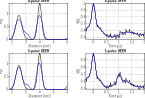

Fitting 5-pulse DEER data¶
%================================================================
% DeerAnalyis2
% Example: 5-pulse DEER fitting
% Fit data obtained from 5-pulse DEER experiments without any correction
%================================================================
clear,clc,clf
%Preparation
%----------------------------------------------
N = 500;
t = linspace(-0.3,4,N);
r = time2dist(t);
lambda = 0.45;
P = rd_twogaussian(r,[2.5 0.3 4 0.2 0.4]);
%Generate 4-pulse DEER signal
V0 = dipolarsignal(t,r,P,'moddepth',lambda,'noiselevel',0.01);
%Generate 5-pulse DEER signal
tshift = max(t/2); %Time shift of the artefact
Amp = 0.4; %Relative amplitude of the artefact
V = dipolarsignal(t,r,P,'moddepth',lambda,'interference',[Amp tshift],'noiselevel',0.01);
%Set initial guesses for the relative artefact amplitude and mod. depth
lambda0 = 0.3;
amp0 = 0.5;
param0 = [0.3 amp0 max(t)/2];
%Fitting 4-pulse DEER
%----------------------------------------------
is5pDEER = false;
%Create function handle depending on r and param from the custom model
fcnhandle = @(t,param)my5pDEER(t,param,r,V0,is5pDEER);
%Launch the fitting of the B-parametric model + Tikhonov regularization
parafit0 = fitparamodel(V0,fcnhandle,t,param0,'Lower',[0 0 0],'Upper',[1 1 max(t)],'TolFun',1e-4);
[Vfit0,Pfit0] = my5pDEER(t,parafit0,r,V0,is5pDEER);
%Fitting 5-pulse DEER
%----------------------------------------------
is5pDEER = true;
%Create function handle depending on r and param from the custom model
fcnhandle = @(t,param)my5pDEER(t,param,r,V,is5pDEER);
%Launch the fitting of the B-parametric model + Tikhonov regularization
parafit = fitparamodel(V,fcnhandle,t,param0,'Lower',[0 0 0],'Upper',[1 1 max(t)],'TolFun',1e-4);
%Obtain the fitted signal and distance distribution
[Vfit,Pfit] = my5pDEER(t,parafit,r,V,is5pDEER);
%Plot results
%----------------------------------------------
subplot(221)
plot(r,P,'k',r,Pfit0,'b','LineWidth',1.5)
box on, grid on, axis tight
xlabel('Distance [nm]')
ylabel('P(r)')
title('4-pulse DEER')
subplot(222)
plot(t,V0,'k',t,Vfit0,'b','LineWidth',1.5)
xlabel('Time [\mus]')
ylabel('V(t)')
box on, grid on, axis tight
title('4-pulse DEER')
subplot(223)
plot(r,P,'k',r,Pfit,'b','LineWidth',1.5)
box on, grid on, axis tight
xlabel('Distance [nm]')
ylabel('P(r)')
title('5-pulse DEER')
subplot(224)
plot(t,V,'k',t,Vfit,'b','LineWidth',1.5)
xlabel('Time [\mus]')
ylabel('V(t)')
box on, grid on, axis tight
title('5-pulse DEER')
%Definition of the time-domain parametric model
%------------------------------------------------
function [Vfit,Pfit] = my5pDEER(t,param,r,V,is5pDEER)
if is5pDEER
%Construct a 5-pulse DEER kernel with variable "artefact" amplitude
K = dipolarkernel(t,r,param(1),'interference',[param(2:3)]);
else
%Construct a 4-pulse DEER kernel
K = dipolarkernel(t,r,param(1));
end
%Regularize the data
Pfit = fitregmodel(V,K,r,'tikhonov','aic');
%Get the signal for comparison in time-domain
Vfit = K*Pfit;
plot(t,V,'.',t,Vfit),drawnow
end
